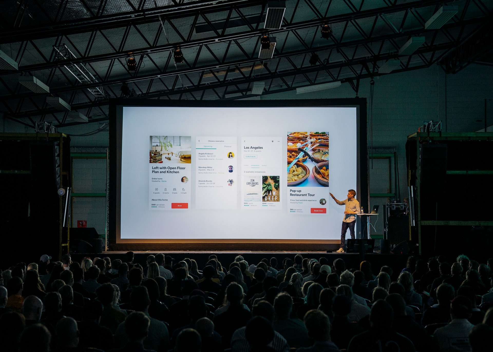

Photo by Teemu Paananen on Unsplash
Du har funnet ut at du har et ønske om å dele. Du har kanskje et tema i tankene, eller en arena du ønsker å dele det i? Det kan være i faggruppen, på en meetup, på en fagdag, på et kundeseminar, på en konferanse, i et podcast, eller noe annet. Listen over steder du kan dele er stor. Hvor utfordrende et gitt format eller sted å dele er, er unikt for deg. Så det er viktig å utforske mulighetene og kjenne på hva som føles riktig.
Denne siden er laget for å hjelpe deg med å finne noe å snakke om, hvilken vinkling du kan du kan ta, og til å finne et sted du ønsker å dele! Den er inspirert av artikkelen til Lucy Bain om hvordan finne noe å snakke om på konferanser. Jeg prøver å ta et steg videre ved å tilby flere spørsmål en kan tenke rundt, og ser på hvor en kan dele. På mange måter er denne siden noe jeg selv kunne ha trengt for et års tid siden og som ville ha gjort det enklere for meg med å komme igang med å dele. Nå har jeg et ønske om å dele det jeg har lært det siste året med deg.
Men, før vi går videre må vi ha en ting helt klart. Jeg ønsker å høre hva du har å dele. Caroline, Nicolai, Kjetil, Erlend, Erik, og Marthe ønsker å høre hva du har å dele. Faggruppa du er i ønsker å høre hva du har å dele. Bekk ønsker å høre hva du har å dele. Hvorfor? Du kan noe andre ikke kan. Ingen er som deg. Du har egne opplevelser, følelser, perspektiver, kunnskap og erfaringer du tar med deg inn i jobben. Det gjør at det du har å si er viktig og nyttig. Dette handler om å ha et ønske om å dele. Her er Janteloven et hinder. Du må derfor være forberedt på å sette den til side for en stund for å få mest mulig ut av denne økten.